<title>FfH Animation Sprint</title>
<meta name="claude:viewport-fit-sides" content="cover">
<link rel="preconnect" href="https://fonts.googleapis.com">
<link rel="preconnect" href="https://fonts.gstatic.com" crossorigin>
<link rel="stylesheet" href="https://fonts.googleapis.com/css2?family=IBM+Plex+Mono:wght@400;500&family=IBM+Plex+Sans:ital,wght@0,400;0,500;0,600;1,400&family=Pixelify+Sans:wght@500;700&display=swap">
<style>/* Layout: a lab report in the house style of the October art sprint (navy ink, heraldic blue, banner gold).
   One reading column (~68ch) that widens to 1180px for players, tables and method dossiers. */
:root {
  --paper: #f1f4f9; --panel: #ffffff; --ink: #15203b; --muted: #56627c; --line: #d6dde9;
  --accent: #1f47ad; --gold: #9a6f0e; --stage: #dfe6d6; --stage-line: #c4cfb8;
  --good: #1b7f52; --warn: #a86400; --bad: #b3261e;
  --display: "Pixelify Sans", "Courier New", monospace;
  --body: "IBM Plex Sans", "Segoe UI", system-ui, sans-serif;
  --mono: "IBM Plex Mono", ui-monospace, Consolas, monospace;
  --step-0: 1rem; --step-1: 1.2rem; --step-2: 1.5rem; --step-3: 2.1rem; --step-4: 3rem;
}
@media (prefers-color-scheme: dark) {
  :root:not([data-theme="light"]) {
    --paper: #0d1323; --panel: #151d31; --ink: #e5eaf5; --muted: #9ba7c0; --line: #28334d;
    --accent: #93b2ff; --gold: #e0b44a; --stage: #1d2836; --stage-line: #2c3a4c;
    --good: #5cc795; --warn: #f0a94a; --bad: #ff8a80; color-scheme: dark;
  }
}
:root[data-theme="dark"] {
  --paper: #0d1323; --panel: #151d31; --ink: #e5eaf5; --muted: #9ba7c0; --line: #28334d;
  --accent: #93b2ff; --gold: #e0b44a; --stage: #1d2836; --stage-line: #2c3a4c;
  --good: #5cc795; --warn: #f0a94a; --bad: #ff8a80; color-scheme: dark;
}
* { box-sizing: border-box; }
body { background: var(--paper); color: var(--ink); font-family: var(--body); font-size: 16px; line-height: 1.6; }
.wrap { max-width: 1180px; margin-inline: auto; padding-left: max(16px, env(safe-area-inset-left, 0px)); padding-right: max(16px, env(safe-area-inset-right, 0px)); }
.read { max-width: 68ch; }
h1, h2, h3 { text-wrap: balance; line-height: 1.15; margin: 0; }
h1 { font-family: var(--display); font-weight: 700; font-size: clamp(2.1rem, 6vw, var(--step-4)); letter-spacing: 0.01em; }
h2 { font-family: var(--display); font-weight: 500; font-size: var(--step-3); }
h3 { font-size: var(--step-1); font-weight: 600; }
p { margin: 0; }
a { color: var(--accent); }
a:focus-visible, button:focus-visible, summary:focus-visible { outline: 2px solid var(--accent); outline-offset: 2px; }
code { font-family: var(--mono); font-size: 0.9em; }
.eyebrow { font-family: var(--mono); font-size: 0.8rem; letter-spacing: 0.08em; text-transform: uppercase; color: var(--muted); }
.num { text-align: right; font-variant-numeric: tabular-nums; font-family: var(--mono); font-size: 0.92em; white-space: nowrap; }
section.block { padding-block: 40px 8px; display: grid; gap: 18px; }
.top { padding-block: 48px 8px; display: grid; gap: 16px; }
.lede { font-size: var(--step-1); max-width: 62ch; }
.toc { display: flex; flex-wrap: wrap; gap: 8px 18px; font-size: 0.92rem; padding-top: 6px; border-top: 2px solid var(--gold); }
.toc a { text-decoration: none; padding-block: 8px; }
.toc a:hover { text-decoration: underline; }
.answer { background: var(--panel); border: 1px solid var(--line); border-top: 4px solid var(--accent); border-radius: 6px; padding-block: 22px; padding-inline: max(18px, 2.4vw); display: grid; gap: 18px; }
.answer > p { font-size: var(--step-1); max-width: 70ch; }
.kpis { display: grid; grid-template-columns: repeat(auto-fit, minmax(200px, 1fr)); gap: 14px 24px; margin: 0; }
.kpis div { display: grid; gap: 2px; border-left: 2px solid var(--line); padding-left: 12px; }
.kpis dt { font-size: 0.82rem; color: var(--muted); }
.kpis dd { margin: 0; font-family: var(--mono); font-size: var(--step-2); font-weight: 500; font-variant-numeric: tabular-nums; }
.kpis dd small { font-family: var(--body); font-size: 0.8rem; color: var(--muted); font-weight: 400; display: block; }
.findings { display: grid; gap: 14px; padding-left: 1.2em; margin: 0; max-width: 72ch; }
.findings li::marker { color: var(--gold); font-weight: 700; }
.gap-list, ul.plain { display: grid; gap: 8px; padding-left: 1.2em; margin: 0; max-width: 72ch; }

/* players */
.player { background: var(--panel); border: 1px solid var(--line); border-radius: 6px; display: grid; gap: 0; min-width: 0; }
.controls { display: flex; flex-wrap: wrap; gap: 6px; align-items: center; padding: 10px 12px; border-bottom: 1px solid var(--line); }
.controls .sep { flex: 0 0 10px; }
.controls button, .quiz button { font: 500 0.85rem var(--body); color: var(--ink); background: var(--paper); border: 1px solid var(--line); border-radius: 4px; padding: 6px 10px; min-height: 34px; cursor: pointer; }
.controls button[aria-pressed="true"], .quiz button[aria-pressed="true"] { background: var(--accent); border-color: var(--accent); color: var(--panel); }
.gridwrap { overflow-x: auto; }
table.anim-grid { border-collapse: collapse; }
table.anim-grid th, table.anim-grid td { padding: 8px 10px; border-bottom: 1px solid var(--line); vertical-align: middle; text-align: left; }
table.anim-grid thead th { font: 600 0.78rem var(--mono); letter-spacing: 0.06em; text-transform: uppercase; color: var(--muted); }
table.anim-grid tbody th { font-weight: 500; font-size: 0.9rem; min-width: 9.5rem; max-width: 12rem; }
table.anim-grid tbody tr:last-child > * { border-bottom: 0; }
.arm-id { display: inline-block; font-family: var(--display); font-weight: 700; color: var(--ink); background: var(--paper); border: 1px solid var(--line); border-radius: 3px; padding: 0 6px; margin-right: 6px; }
figure { margin: 0; display: grid; gap: 4px; min-width: 0; }
figure.cell canvas { display: block; background: var(--stage); border-radius: 3px; image-rendering: pixelated; }
figure.cell figcaption, figcaption { font: 0.75rem var(--mono); color: var(--muted); font-variant-numeric: tabular-nums; min-height: 1.2em; }
.none { color: var(--muted); font-size: 0.85rem; }
.feature { display: flex; flex-wrap: wrap; gap: 16px; padding: 14px; overflow-x: auto; }
.feature figure { flex: 0 0 auto; }
.videos { display: grid; grid-template-columns: repeat(auto-fit, minmax(min(100%, 340px), 1fr)); gap: 16px; align-items: start; }
video { width: 100%; height: auto; border-radius: 6px; border: 1px solid var(--line); background: var(--stage); image-rendering: pixelated; }

/* quiz */
.quizzes { display: grid; grid-template-columns: repeat(auto-fit, minmax(min(100%, 560px), 1fr)); gap: 16px; }
.quiz { background: var(--panel); border: 1px solid var(--line); border-radius: 6px; padding: 14px; display: grid; gap: 10px; }
.quiz .pair { display: flex; gap: 10px; flex-wrap: wrap; }
.quiz .pair figure { flex: 1 1 128px; }
.quiz .pair { overflow-x: auto; }
.quiz .picks { display: flex; gap: 8px; }
.quiz [data-reveal] { font-size: 0.9rem; color: var(--muted); }

/* tables */
.tablewrap { overflow-x: auto; background: var(--panel); border: 1px solid var(--line); border-radius: 6px; }
table.results { border-collapse: collapse; width: 100%; min-width: 820px; font-size: 0.92rem; }
table.results th, table.results td { padding: 9px 12px; border-bottom: 1px solid var(--line); text-align: left; vertical-align: top; }
table.results th { font-size: 0.78rem; font-weight: 600; color: var(--muted); letter-spacing: 0.03em; }
table.results tbody tr:last-child td { border-bottom: 0; }
td.best { font-weight: 600; color: var(--good); }
.note { font-size: 0.85rem; color: var(--muted); max-width: 80ch; }

/* dossiers */
.method { border-top: 1px solid var(--line); padding-block: 28px 8px; display: grid; gap: 14px; }
.mhead { display: flex; gap: 14px; align-items: flex-start; }
.mhead > div { display: grid; gap: 4px; min-width: 0; }
.badge { font-family: var(--display); font-weight: 700; font-size: 1.15rem; padding: 5px 10px 3px; border-radius: 4px; color: var(--ink); background: var(--panel); border: 2px solid var(--accent); box-shadow: inset 0 -4px 0 var(--accent); flex: none; }
.verdict { color: var(--muted); max-width: 72ch; }
.facts { display: flex; flex-wrap: wrap; gap: 8px 28px; margin: 0; }
.facts div { display: grid; }
.facts dt { font-size: 0.75rem; color: var(--muted); letter-spacing: 0.04em; text-transform: uppercase; }
.facts dd { margin: 0; font-family: var(--mono); font-variant-numeric: tabular-nums; font-weight: 500; }
.prose { display: grid; gap: 10px; max-width: 76ch; }
.cols { display: grid; grid-template-columns: repeat(auto-fit, minmax(min(100%, 300px), 1fr)); gap: 24px; }
.cols > div { display: grid; gap: 10px; align-content: start; min-width: 0; }
pre { background: var(--panel); border: 1px solid var(--line); border-radius: 6px; padding: 14px; overflow-x: auto; font: 0.82rem/1.5 var(--mono); margin: 0; }
.strip { overflow-x: auto; border: 1px solid var(--line); border-radius: 6px; background: var(--stage); }
.strip img { display: block; max-width: none; height: auto; image-rendering: pixelated; }
details { background: var(--panel); border: 1px solid var(--line); border-radius: 6px; }
summary { cursor: pointer; padding: 10px 14px; font-size: 0.9rem; color: var(--muted); }
details[open] summary { border-bottom: 1px solid var(--line); }
details > div { padding: 12px 14px; display: grid; gap: 10px; }
footer { padding-block: 40px 56px; color: var(--muted); font-size: 0.85rem; }
@media (max-width: 560px) { .mhead { flex-direction: column; gap: 8px; } }
@media (prefers-reduced-motion: no-preference) { html { scroll-behavior: smooth; } }
</style>

<header class="top wrap">
  <p class="eyebrow">Research sprint · Fall from Heaven port · 20 October 2026</p>
  <h1>FfH Animation Sprint</h1>
  <p class="lede">Seven ways to give the M7 swordsman an idle, a strike, a flinch and a death, all on the same beat sheet,
  judged blind by three agents, then a recipe built from what won and checked on a second unit. Every animation on this
  page plays.</p>
  <nav class="toc" aria-label="Sections"><a href="#answer">Short answer</a><a href="#final">Recommended set</a><a href="#compare">Side by side</a><a href="#quiz">Less stiff?</a><a href="#results">Results</a><a href="#methods">Method by method</a><a href="#recipe">Pipeline</a><a href="#how">How it ran</a><a href="#next">Not tested</a></nav>
</header>
<main>
<section class="block wrap" id="answer"><h2>The short answer</h2>
<div class="answer">
  <p><strong>Draw the big actions with the image model, and move the sprite's own pixels for the small ones.</strong>
  gpt-image-2.5-sunburst draws a convincing strike, flinch and death when it gets one sprite sheet per animation with the
  real sprite in the first cell and a flat-colour pose blockout in every other cell. It cannot draw an idle: every
  redraw shimmers. So the recipe warps the real sprite for idle and for the frames next to idle. That hybrid was the
  best complete set in blind judging, and the same tool animated a second unit unchanged.</p>
  <dl class="kpis">
    <div><dt>Round-1 judge score, recipe vs control</dt><dd>7.28 vs 4.88<small>weighted, out of 10, mean of four animations</small></dd></div>
    
    <div><dt>One full set (four animations)</dt><dd>3 calls · $0.23<small>27 s wall-clock, from sprite to frames</small></dd></div>
    <div><dt>Image API for the whole sprint</dt><dd>$4.45<small>of the $20 cap, pessimistic prices</small></dd></div>
  </dl>
</div>
<ol class="findings">
  <li><strong>Stiffness was a posing problem, not a rendering problem.</strong> Moving the whole sprite (A0) or its cut-out
    parts (R) cannot produce a pose the sprite does not already contain. Both came last for strike, flinch and death in every
    judge's ranking, and judges could restore the order of A0's shuffled strike frames only half to three-quarters of the time.</li>
  <li><strong>One sheet per animation, with the real sprite in cell 1, keeps the character consistent.</strong> The four
    sheet methods (G0, G1, G2, K) scored 7.0–7.6 on strike and death, and judges restored the order of almost every
    shuffled strike they drew. Chaining frames one call at a time (C) scored lower (6.63) at three and a half times the
    cost, and the Responses API's multi-turn image tool lost scale and facing entirely.</li>
  <li><strong>Pose guides buy predictability more than quality.</strong> With no guides (G0) the model posed the best strike
    of the trials, but ignored the ground line (rows 27–42 px high), grew 6–7% in half the variants and cropped the blade.
    With blockouts (G1) the frames came back on the ground line at the sprite's own size (standing frames 85–87 px against
    86), so the shared code could place them without large corrections. That predictability is what lets the recipe run
    with little supervision.</li>
  <li><strong>The image model cannot do idle.</strong> A 1-pixel breath is smaller than the difference between any two of
    its drawings, so every sheet idle boiled (judge scores 3.8–5.8). Warping the real sprite scored 7.8–8.1.</li>
  <li><strong>What is left is shared by every model method</strong>: a thin magenta keying fringe (the recipe now removes
    it), corpses lying flatter than the isometric axis, occasional off-model faces on hit frames, and one variant in two
    with a visible defect, so a person still picks between two variants.</li>
</ol></section>

<section class="block wrap" id="final"><h2>The recommended set</h2>
  <p class="read">The recipe's output for the swordsman, with the finishing touches a game would add: a smear arc on the
  swing, an impact spark on the hit frame and a white hit flash on the flinch and death. Pause and step to see single
  frames; the captions give each frame's duration from the beat sheet.</p>
  <div class="player" data-clock data-zoom="2"><div class="controls" role="toolbar" aria-label="Playback"><button type="button" data-ctl="play">Pause</button><button type="button" data-ctl="prev" aria-label="Previous frame">◀ frame</button><button type="button" data-ctl="next" aria-label="Next frame">frame ▶</button><button type="button" data-ctl="restart">Restart</button><span class="sep"></span><button type="button" data-ctl="zoom" data-v="1">1×</button><button type="button" data-ctl="zoom" data-v="2">2×</button><button type="button" data-ctl="zoom" data-v="3">3×</button><button type="button" data-ctl="tile">Grass tile</button></div><div class="feature"><figure class="cell"><canvas data-arm="FINAL" data-anim="idle" width="256" height="256" aria-label="Recommended recipe, idle"></canvas><figcaption><strong>idle</strong> · <span data-frame></span></figcaption></figure><figure class="cell"><canvas data-arm="FINAL" data-anim="strike" width="256" height="256" aria-label="Recommended recipe, strike"></canvas><figcaption><strong>strike</strong> · <span data-frame></span></figcaption></figure><figure class="cell"><canvas data-arm="FINAL" data-anim="flinch" width="256" height="256" aria-label="Recommended recipe, flinch"></canvas><figcaption><strong>flinch</strong> · <span data-frame></span></figcaption></figure><figure class="cell"><canvas data-arm="FINAL" data-anim="death" width="256" height="256" aria-label="Recommended recipe, death"></canvas><figcaption><strong>death</strong> · <span data-frame></span></figcaption></figure></div></div>
  <div class="videos"><figure><video src="assets/FINAL_sequence_3x.mp4" poster="assets/FINAL_sequence_3x_poster.jpg" autoplay muted loop playsinline controls></video><figcaption>Full sequence at 3×: idle, strike, idle, flinch, idle, death, corpse hold</figcaption></figure><figure><video src="assets/FINAL_vignette.mp4" poster="assets/FINAL_vignette_poster.jpg" autoplay muted loop playsinline controls></video><figcaption>Combat vignette at 2×: blue strikes, red flinches; blue strikes again, red dies</figcaption></figure></div>
  <h3>The same tool on Hyborem</h3>
  <p class="read">To check the recipe is not swordsman-specific, it ran on the M7 Hyborem sprite: a 108 px demon lord with
  horns, cape and a flaming greatsword. The only new work was annotating his joints on frame 0; the swordsman's poses were
  retargeted onto his skeleton and drawn as grey blockouts. Three calls in 22 s, $0.23, first try. His raised greatsword is
  clipped at the top of the 128 px canvas in the wind-up: big units need a taller animation canvas.</p>
  <div class="player" data-clock data-zoom="2"><div class="controls" role="toolbar" aria-label="Playback"><button type="button" data-ctl="play">Pause</button><button type="button" data-ctl="prev" aria-label="Previous frame">◀ frame</button><button type="button" data-ctl="next" aria-label="Next frame">frame ▶</button><button type="button" data-ctl="restart">Restart</button><span class="sep"></span><button type="button" data-ctl="zoom" data-v="1">1×</button><button type="button" data-ctl="zoom" data-v="2">2×</button><button type="button" data-ctl="zoom" data-v="3">3×</button><button type="button" data-ctl="tile">Grass tile</button></div><div class="feature"><figure class="cell"><canvas data-arm="HYB" data-anim="idle" width="256" height="256" aria-label="Recipe on Hyborem, idle"></canvas><figcaption><strong>idle</strong> · <span data-frame></span></figcaption></figure><figure class="cell"><canvas data-arm="HYB" data-anim="strike" width="256" height="256" aria-label="Recipe on Hyborem, strike"></canvas><figcaption><strong>strike</strong> · <span data-frame></span></figcaption></figure><figure class="cell"><canvas data-arm="HYB" data-anim="flinch" width="256" height="256" aria-label="Recipe on Hyborem, flinch"></canvas><figcaption><strong>flinch</strong> · <span data-frame></span></figcaption></figure><figure class="cell"><canvas data-arm="HYB" data-anim="death" width="256" height="256" aria-label="Recipe on Hyborem, death"></canvas><figcaption><strong>death</strong> · <span data-frame></span></figcaption></figure></div></div>
  <div class="videos"><figure><video src="assets/HYB_sequence_3x.mp4" poster="assets/HYB_sequence_3x_poster.jpg" autoplay muted loop playsinline controls></video><figcaption>Full sequence at 3×: idle, strike, idle, flinch, idle, death, corpse hold</figcaption></figure><figure><video src="assets/HYB_vignette.mp4" poster="assets/HYB_vignette_poster.jpg" autoplay muted loop playsinline controls></video><figcaption>Combat vignette at 2×: blue strikes, red flinches; blue strikes again, red dies</figcaption></figure></div>
</section>

<section class="block wrap" id="compare"><h2>Every method, side by side</h2>
  <p class="read">All players share one clock. Pause to step through frames; zoom and the grass tile change every cell.
  Round-1 frames carry no effects, so motion has to come from the poses; the recipe is shown without effects too.</p>
  <div class="player" data-clock data-zoom="1"><div class="controls" role="toolbar" aria-label="Playback"><button type="button" data-ctl="play">Pause</button><button type="button" data-ctl="prev" aria-label="Previous frame">◀ frame</button><button type="button" data-ctl="next" aria-label="Next frame">frame ▶</button><button type="button" data-ctl="restart">Restart</button><span class="sep"></span><button type="button" data-ctl="zoom" data-v="1">1×</button><button type="button" data-ctl="zoom" data-v="2">2×</button><button type="button" data-ctl="zoom" data-v="3">3×</button><button type="button" data-ctl="tile">Grass tile</button></div><div class="gridwrap"><table class="anim-grid"><thead><tr><th></th><th scope="col">idle</th><th scope="col">strike</th><th scope="col">flinch</th><th scope="col">death</th></tr></thead><tbody><tr><th scope="row"><span class="arm-id">FN</span>Recommended recipe (no FX)</th><td><figure class="cell"><canvas data-arm="FN" data-anim="idle" width="128" height="128" aria-label="Recommended recipe (no FX), idle"></canvas><figcaption data-frame></figcaption></figure></td><td><figure class="cell"><canvas data-arm="FN" data-anim="strike" width="128" height="128" aria-label="Recommended recipe (no FX), strike"></canvas><figcaption data-frame></figcaption></figure></td><td><figure class="cell"><canvas data-arm="FN" data-anim="flinch" width="128" height="128" aria-label="Recommended recipe (no FX), flinch"></canvas><figcaption data-frame></figcaption></figure></td><td><figure class="cell"><canvas data-arm="FN" data-anim="death" width="128" height="128" aria-label="Recommended recipe (no FX), death"></canvas><figcaption data-frame></figcaption></figure></td></tr><tr><th scope="row"><span class="arm-id">A0</span>Whole-sprite tween (control)</th><td><figure class="cell"><canvas data-arm="A0" data-anim="idle" width="128" height="128" aria-label="Whole-sprite tween (control), idle"></canvas><figcaption data-frame></figcaption></figure></td><td><figure class="cell"><canvas data-arm="A0" data-anim="strike" width="128" height="128" aria-label="Whole-sprite tween (control), strike"></canvas><figcaption data-frame></figcaption></figure></td><td><figure class="cell"><canvas data-arm="A0" data-anim="flinch" width="128" height="128" aria-label="Whole-sprite tween (control), flinch"></canvas><figcaption data-frame></figcaption></figure></td><td><figure class="cell"><canvas data-arm="A0" data-anim="death" width="128" height="128" aria-label="Whole-sprite tween (control), death"></canvas><figcaption data-frame></figcaption></figure></td></tr><tr><th scope="row"><span class="arm-id">R</span>Cut-out rig + mesh warp</th><td><figure class="cell"><canvas data-arm="R" data-anim="idle" width="128" height="128" aria-label="Cut-out rig + mesh warp, idle"></canvas><figcaption data-frame></figcaption></figure></td><td><figure class="cell"><canvas data-arm="R" data-anim="strike" width="128" height="128" aria-label="Cut-out rig + mesh warp, strike"></canvas><figcaption data-frame></figcaption></figure></td><td><figure class="cell"><canvas data-arm="R" data-anim="flinch" width="128" height="128" aria-label="Cut-out rig + mesh warp, flinch"></canvas><figcaption data-frame></figcaption></figure></td><td><figure class="cell"><canvas data-arm="R" data-anim="death" width="128" height="128" aria-label="Cut-out rig + mesh warp, death"></canvas><figcaption data-frame></figcaption></figure></td></tr><tr><th scope="row"><span class="arm-id">G0</span>Sheet, no pose guides</th><td><figure class="cell"><canvas data-arm="G0" data-anim="idle" width="128" height="128" aria-label="Sheet, no pose guides, idle"></canvas><figcaption data-frame></figcaption></figure></td><td><figure class="cell"><canvas data-arm="G0" data-anim="strike" width="128" height="128" aria-label="Sheet, no pose guides, strike"></canvas><figcaption data-frame></figcaption></figure></td><td><figure class="cell"><canvas data-arm="G0" data-anim="flinch" width="128" height="128" aria-label="Sheet, no pose guides, flinch"></canvas><figcaption data-frame></figcaption></figure></td><td><figure class="cell"><canvas data-arm="G0" data-anim="death" width="128" height="128" aria-label="Sheet, no pose guides, death"></canvas><figcaption data-frame></figcaption></figure></td></tr><tr><th scope="row"><span class="arm-id">G1</span>Sheet with pose blockouts</th><td><figure class="cell"><canvas data-arm="G1" data-anim="idle" width="128" height="128" aria-label="Sheet with pose blockouts, idle"></canvas><figcaption data-frame></figcaption></figure></td><td><figure class="cell"><canvas data-arm="G1" data-anim="strike" width="128" height="128" aria-label="Sheet with pose blockouts, strike"></canvas><figcaption data-frame></figcaption></figure></td><td><figure class="cell"><canvas data-arm="G1" data-anim="flinch" width="128" height="128" aria-label="Sheet with pose blockouts, flinch"></canvas><figcaption data-frame></figcaption></figure></td><td><figure class="cell"><canvas data-arm="G1" data-anim="death" width="128" height="128" aria-label="Sheet with pose blockouts, death"></canvas><figcaption data-frame></figcaption></figure></td></tr><tr><th scope="row"><span class="arm-id">G2</span>Rig frames repainted</th><td><figure class="cell"><canvas data-arm="G2" data-anim="idle" width="128" height="128" aria-label="Rig frames repainted, idle"></canvas><figcaption data-frame></figcaption></figure></td><td><figure class="cell"><canvas data-arm="G2" data-anim="strike" width="128" height="128" aria-label="Rig frames repainted, strike"></canvas><figcaption data-frame></figcaption></figure></td><td><figure class="cell"><canvas data-arm="G2" data-anim="flinch" width="128" height="128" aria-label="Rig frames repainted, flinch"></canvas><figcaption data-frame></figcaption></figure></td><td><figure class="cell"><canvas data-arm="G2" data-anim="death" width="128" height="128" aria-label="Rig frames repainted, death"></canvas><figcaption data-frame></figcaption></figure></td></tr><tr><th scope="row"><span class="arm-id">K</span>Keys, then in-betweens</th><td><p class="none">not made</p></td><td><figure class="cell"><canvas data-arm="K" data-anim="strike" width="128" height="128" aria-label="Keys, then in-betweens, strike"></canvas><figcaption data-frame></figcaption></figure></td><td><p class="none">not made</p></td><td><figure class="cell"><canvas data-arm="K" data-anim="death" width="128" height="128" aria-label="Keys, then in-betweens, death"></canvas><figcaption data-frame></figcaption></figure></td></tr><tr><th scope="row"><span class="arm-id">C</span>Chained per-frame</th><td><p class="none">not made</p></td><td><figure class="cell"><canvas data-arm="C" data-anim="strike" width="128" height="128" aria-label="Chained per-frame, strike"></canvas><figcaption data-frame></figcaption></figure></td><td><p class="none">not made</p></td><td><p class="none">not made</p></td></tr></tbody></table></div></div></section>

<section class="block wrap" id="quiz"><h2>Which looks less stiff?</h2><p class="read">Agents judged stills; motion is yours to judge. Each pair plays the same animation by two methods, unlabelled. Pick the one that looks less like a moved cut-out, then see which was which.</p><div class="quizzes"><div class="quiz player" data-clock data-zoom="2" data-quiz data-left="FN" data-right="A0">
  <h3>Pair 1: strike</h3>
  <div class="pair"><figure class="cell"><canvas data-arm="FN" data-anim="strike" width="256" height="256" aria-label="Left strike"></canvas><figcaption data-frame></figcaption></figure>
  <figure class="cell"><canvas data-arm="A0" data-anim="strike" width="256" height="256" aria-label="Right strike"></canvas><figcaption data-frame></figcaption></figure></div>
  <div class="picks"><button type="button" data-pick="L">Left is less stiff</button><button type="button" data-pick="R">Right is less stiff</button></div>
  <p data-reveal hidden></p></div><div class="quiz player" data-clock data-zoom="2" data-quiz data-left="R" data-right="FN">
  <h3>Pair 2: death</h3>
  <div class="pair"><figure class="cell"><canvas data-arm="R" data-anim="death" width="256" height="256" aria-label="Left death"></canvas><figcaption data-frame></figcaption></figure>
  <figure class="cell"><canvas data-arm="FN" data-anim="death" width="256" height="256" aria-label="Right death"></canvas><figcaption data-frame></figcaption></figure></div>
  <div class="picks"><button type="button" data-pick="L">Left is less stiff</button><button type="button" data-pick="R">Right is less stiff</button></div>
  <p data-reveal hidden></p></div><div class="quiz player" data-clock data-zoom="2" data-quiz data-left="G1" data-right="FN">
  <h3>Pair 3: idle</h3>
  <div class="pair"><figure class="cell"><canvas data-arm="G1" data-anim="idle" width="256" height="256" aria-label="Left idle"></canvas><figcaption data-frame></figcaption></figure>
  <figure class="cell"><canvas data-arm="FN" data-anim="idle" width="256" height="256" aria-label="Right idle"></canvas><figcaption data-frame></figcaption></figure></div>
  <div class="picks"><button type="button" data-pick="L">Left is less stiff</button><button type="button" data-pick="R">Right is less stiff</button></div>
  <p data-reveal hidden></p></div><div class="quiz player" data-clock data-zoom="2" data-quiz data-left="R" data-right="G2">
  <h3>Pair 4: strike</h3>
  <div class="pair"><figure class="cell"><canvas data-arm="R" data-anim="strike" width="256" height="256" aria-label="Left strike"></canvas><figcaption data-frame></figcaption></figure>
  <figure class="cell"><canvas data-arm="G2" data-anim="strike" width="256" height="256" aria-label="Right strike"></canvas><figcaption data-frame></figcaption></figure></div>
  <div class="picks"><button type="button" data-pick="L">Left is less stiff</button><button type="button" data-pick="R">Right is less stiff</button></div>
  <p data-reveal hidden></p></div></div></section>

<section class="block wrap" id="results"><h2>Results</h2>
  <p class="read">Round 1: three judges scored every method's four animations from stills (strips at 2× and 3×, the 1× map
  view, onion skins and silhouettes), blind to which method made what. Score is the weighted mean: motion 35%,
  consistency 30%, style 20%, appeal 15%. The recipe's first build took part as one more unnamed letter.</p>
  <div class="tablewrap"><table class="results"><thead><tr><th>Method</th><th class="num">idle</th><th class="num">strike</th><th class="num">flinch</th><th class="num">death</th><th class="num">Mean</th><th class="num">Image API</th><th class="num">Calls</th><th class="num">Agent min</th></tr></thead><tbody><tr><td><span class="arm-id">A0</span>Whole-sprite tween (control)</td><td class="num">6.28</td><td class="num">4.58</td><td class="num">5.03</td><td class="num">3.62</td><td class="num">4.88</td><td class="num">$0.00</td><td class="num">0</td><td class="num">0</td></tr><tr><td><span class="arm-id">R</span>Cut-out rig + mesh warp</td><td class="num best">8.07</td><td class="num">4.95</td><td class="num">5.20</td><td class="num">3.97</td><td class="num">5.55</td><td class="num">$0.00</td><td class="num">0</td><td class="num">30</td></tr><tr><td><span class="arm-id">G0</span>Sheet, no pose guides</td><td class="num">3.80</td><td class="num best">7.60</td><td class="num">6.18</td><td class="num">7.03</td><td class="num">6.15</td><td class="num">$0.71</td><td class="num">9</td><td class="num">23</td></tr><tr><td><span class="arm-id">G1</span>Sheet with pose blockouts</td><td class="num">4.13</td><td class="num">7.17</td><td class="num">6.02</td><td class="num">7.00</td><td class="num">6.08</td><td class="num">$0.55</td><td class="num">7</td><td class="num">23</td></tr><tr><td><span class="arm-id">G2</span>Rig frames repainted</td><td class="num">5.78</td><td class="num">7.35</td><td class="num">7.20</td><td class="num">7.18</td><td class="num">6.88</td><td class="num">$0.71</td><td class="num">9</td><td class="num">17</td></tr><tr><td><span class="arm-id">K</span>Keys, then in-betweens</td><td class="num"></td><td class="num">7.20</td><td class="num"></td><td class="num best">7.62</td><td class="num">7.41</td><td class="num">$0.56</td><td class="num">7</td><td class="num">14</td></tr><tr><td><span class="arm-id">C</span>Chained per-frame</td><td class="num"></td><td class="num">6.63</td><td class="num"></td><td class="num"></td><td class="num">6.63</td><td class="num">$1.11</td><td class="num">11</td><td class="num">11</td></tr><tr><td><span class="arm-id">FN</span>Recommended recipe, first build (no FX)</td><td class="num">7.80</td><td class="num">6.65</td><td class="num best">7.37</td><td class="num">7.28</td><td class="num">7.28</td><td class="num">$0.23</td><td class="num">3</td><td class="num">0</td></tr></tbody></table></div>
  <p class="note">Best per animation in green. K made only strike and death and C only the strike, so their means cover
  fewer animations. Image API is the ledger's pessimistic estimate; agent minutes include reading the brief and run in
  parallel. A0 was scripted by the lead in a few minutes. Differences under about 0.4 are within noise for three judges.</p>
  <h3>Verification: the fixed recipe against the winners</h3>
  <p class="read">The round-1 comments named the recipe's flaws: a smudge on the shorts in the chosen strike variant, a
  soft settle frame, and the magenta fringe. The recipe then picked the clean strike variant, sharpened its warps and
  removed the fringe, without new image calls. Three fresh judges, with new letters, then compared it per animation with
  its own first build and the two best round-1 methods for that animation.</p>
  <p class="note">Verification round still running.</p>
  <h3>Measured motion</h3>
  <p class="read">Each cell gives non-rigidity · overlap · colour drift. Non-rigidity is 1 minus the best silhouette overlap
  after rotating, scaling and shearing frame 0 onto a frame, so 0 means the frame is just frame 0 moved. Overlap is the
  spread, in frames, of when the sword, shield, hair and tunic each move most, so 0 means everything moves in lockstep.
  Drift is the colour distance to the sprite's own palette. For idle, boil is the mean change between consecutive frames
  in the loop.</p>
  <div class="tablewrap"><table class="results"><thead><tr><th>Method</th><th class="num">idle</th><th class="num">strike</th><th class="num">flinch</th><th class="num">death</th></tr></thead><tbody><tr><td><span class="arm-id">A0</span>Whole-sprite tween (control)</td><td class="num">0.03 · 0.0 · 0.4 · boil 17</td><td class="num">0.06 · 0.0 · 0.5</td><td class="num">0.05 · 0.0 · 0.5</td><td class="num">0.16 · 1.0 · 0.6</td></tr><tr><td><span class="arm-id">R</span>Cut-out rig + mesh warp</td><td class="num">0.02 · 0.4 · 0.0 · boil 12</td><td class="num">0.28 · 1.3 · 0.4</td><td class="num">0.18 · 0.5 · 0.4</td><td class="num">0.43 · 0.0 · 0.5</td></tr><tr><td><span class="arm-id">G0</span>Sheet, no pose guides</td><td class="num">0.11 · 0.4 · 0.6 · boil 51</td><td class="num">0.34 · 0.4 · 1.0</td><td class="num">0.44 · 0.0 · 0.8</td><td class="num">0.45 · 0.4 · 0.9</td></tr><tr><td><span class="arm-id">G1</span>Sheet with pose blockouts</td><td class="num">0.09 · 0.4 · 0.7 · boil 44</td><td class="num">0.31 · 0.8 · 0.9</td><td class="num">0.33 · 0.0 · 0.9</td><td class="num">0.41 · 1.5 · 1.1</td></tr><tr><td><span class="arm-id">G2</span>Rig frames repainted</td><td class="num">0.03 · 0.7 · 0.7 · boil 22</td><td class="num">0.29 · 1.1 · 0.8</td><td class="num">0.30 · 0.0 · 1.1</td><td class="num">0.42 · 0.8 · 1.2</td></tr><tr><td><span class="arm-id">K</span>Keys, then in-betweens</td><td class="num"></td><td class="num">0.33 · 0.5 · 1.2</td><td class="num"></td><td class="num">0.41 · 0.4 · 1.2</td></tr><tr><td><span class="arm-id">C</span>Chained per-frame</td><td class="num"></td><td class="num">0.34 · 1.1 · 1.1</td><td class="num"></td><td class="num"></td></tr><tr><td><span class="arm-id">FINAL</span>Recommended recipe</td><td class="num">0.02 · 0.4 · 0.0 · boil 12</td><td class="num">0.35 · 0.5 · 0.7</td><td class="num">0.34 · 0.0 · 1.0</td><td class="num">0.40 · 1.5 · 1.0</td></tr></tbody></table></div>
</section>

<section class="block wrap" id="methods"><h2>Method by method</h2>
  <p class="read">Ordered as the recipe uses them: the control and the rig first, then the image-model methods, then the
  recipe. Each has its full-sequence video (and the combat vignette where it made all four animations).</p>
  
<section class="method" id="m-a0">
  <header class="mhead"><span class="badge">A0</span><div><h3>Whole-sprite tween (control)</h3><p class="verdict">The control, and the failure you described: moving the whole sprite cannot draw a new pose. Last for strike, flinch and death in every judge's ranking.</p></div></header>
  <dl class="facts"><div><dt>Round-1 mean</dt><dd>4.88</dd></div><div><dt>Animations</dt><dd>4 of 4</dd></div>
  <div><dt>Image API</dt><dd>$0.00</dd></div><div><dt>Calls</dt><dd>0</dd></div><div><dt>Run time</dt><dd>under 1 s</dd></div></dl>
  <div class="prose"><p><strong>How it worked.</strong> Built in code in a few minutes, no image-model calls. Every frame is the static sprite rotated, sheared, squashed or slid about the feet, following the same beats as every other method: a 1–2% vertical stretch for breathing, a lean back and lunge with shear for the strike, a recoil for the flinch, and a tip-over that ends lying along the isometric axis for the death. Like every round-1 method it carries no smear, flash or fade.</p><p><strong>What came out well.</strong> Idle: a gentle stretch is acceptable (6.28), because breathing is the one action that really is a small whole-body change. The character never drifts, because every pixel is the sprite's own.</p><p><strong>What went wrong.</strong> The sword never leaves the ready grip, so the strike has no wind-up, swing or contact (judges: “the whole sprite just slides left and right as a cut-out”). Judges could put its shuffled strike frames back in order only 50–75% of the time, against 100% for most other methods. The death is a rigid figure tilting over with the sword still raised; rotated outlines go jagged and the lying frames sink into the tile.</p></div>
  <div class="videos"><figure><video src="assets/A0_sequence_3x.mp4" poster="assets/A0_sequence_3x_poster.jpg" muted loop playsinline controls preload="none"></video><figcaption>Full sequence at 3×: idle, strike, idle, flinch, idle, death, corpse hold</figcaption></figure><figure><video src="assets/A0_vignette.mp4" poster="assets/A0_vignette_poster.jpg" muted loop playsinline controls preload="none"></video><figcaption>Combat vignette at 2×: blue strikes, red flinches; blue strikes again, red dies</figcaption></figure></div>
  <details><summary>Every frame at game scale</summary><div><figure><div class="strip"></div><figcaption>idle at 1×</figcaption></figure><figure><div class="strip"></div><figcaption>strike at 1×</figcaption></figure><figure><div class="strip"></div><figcaption>flinch at 1×</figcaption></figure><figure><div class="strip"></div><figcaption>death at 1×</figcaption></figure></div></details>
</section>
<section class="method" id="m-r">
  <header class="mhead"><span class="badge">R</span><div><h3>Cut-out rig + mesh warp</h3><p class="verdict">A well-made puppet: the best idle of the trials, and the right tool for small motion, but it still reads as a cut-out in the big actions.</p></div></header>
  <dl class="facts"><div><dt>Round-1 mean</dt><dd>5.55</dd></div><div><dt>Animations</dt><dd>4 of 4</dd></div>
  <div><dt>Image API</dt><dd>$0.00</dd></div><div><dt>Calls</dt><dd>0</dd></div><div><dt>Agent time</dt><dd>30 min</dd></div></dl>
  <div class="prose"><p><strong>How it worked.</strong> The sprite was cut into eleven parts (head, torso, upper and lower arms with the sword, the shield arm, thighs, shins with boots) with polygon masks. Pixels hidden behind other parts were filled in code. Each frame rotates the parts about their joints to match <code>poses.json</code>, draws the blade in code at any angle, and uses a rigid mesh warp (moving least squares) for leans and squash. Idle is a sharpened mesh warp of the whole sprite, with the sword and shield moving one frame late as rigid layers. No image-model calls.</p><p><strong>What came out well.</strong> Idle won round 1 (8.07): the breath follows the beat exactly, loops with no pop and never changes a pixel it does not have to. The character stays identical in every frame (colour drift 0.41 on the strike, the lowest of any method). Limbs and sword get real overlapping action (overlap index 1.30).</p><p><strong>What went wrong.</strong> It cannot draw what the sprite does not contain. The face and torso never change, a sleeve rotated 180° reads as a lump, stretched forearms go thin, and the kneel shows upside-down shins. Judges saw resampled, softer frames popping against the crisp frame 0 and a corpse that is “the standing sprite rotated and squashed”. Strike 4.95, flinch 5.20, death 3.97.</p></div>
  <div class="videos"><figure><video src="assets/R_sequence_3x.mp4" poster="assets/R_sequence_3x_poster.jpg" muted loop playsinline controls preload="none"></video><figcaption>Full sequence at 3×: idle, strike, idle, flinch, idle, death, corpse hold</figcaption></figure><figure><video src="assets/R_vignette.mp4" poster="assets/R_vignette_poster.jpg" muted loop playsinline controls preload="none"></video><figcaption>Combat vignette at 2×: blue strikes, red flinches; blue strikes again, red dies</figcaption></figure></div>
  <details><summary>Every frame at game scale</summary><div><figure><div class="strip">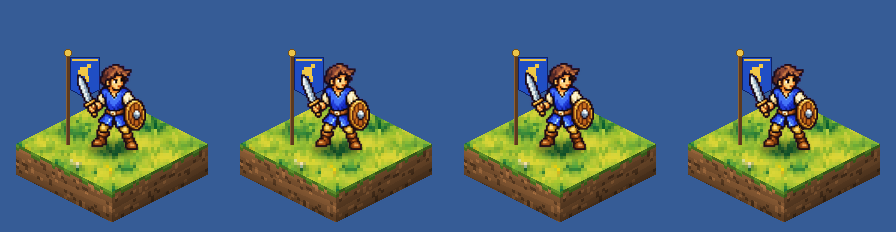</div><figcaption>idle at 1×</figcaption></figure><figure><div class="strip"></div><figcaption>strike at 1×</figcaption></figure><figure><div class="strip">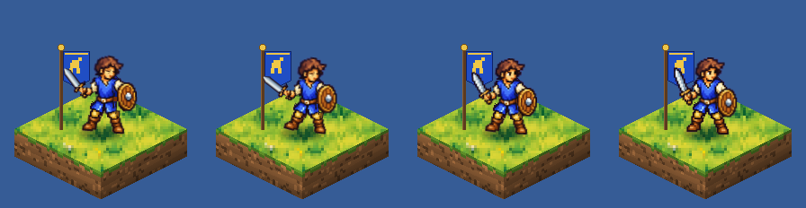</div><figcaption>flinch at 1×</figcaption></figure><figure><div class="strip">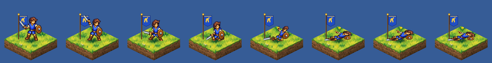</div><figcaption>death at 1×</figcaption></figure></div></details>
</section>
<section class="method" id="m-g0">
  <header class="mhead"><span class="badge">G0</span><div><h3>Sheet, no pose guides</h3><p class="verdict">The model's own posing is excellent: the best strike of the trials. It is also the least predictable, which is why the recipe adds guides.</p></div></header>
  <dl class="facts"><div><dt>Round-1 mean</dt><dd>6.15</dd></div><div><dt>Animations</dt><dd>4 of 4</dd></div>
  <div><dt>Image API</dt><dd>$0.71</dd></div><div><dt>Calls</dt><dd>9</dd></div><div><dt>Agent time</dt><dd>23 min</dd></div></dl>
  <div class="prose"><p><strong>How it worked.</strong> One image call per animation draws a 4×2 sprite sheet. Cell 1 holds the real sprite at 3×, and the other cells are empty magenta. The model poses the character from the beat-sheet text alone. Shared code keys the magenta, takes one scale from the model's redraw of cell 1 and snaps every frame onto the ground row. Two variants per call, up to three rounds of rewording, best variant picked by eye.</p><p><strong>What came out well.</strong> Strike 7.60, the top round-1 score: clear anticipation, the blade behind the head on the wind-up, a level swing, a low lunge on contact and a follow-through near the ground. Facing and handedness were right in all 42 cells it generated for the strike.</p><p><strong>What went wrong.</strong> Nothing tells the model where the ground or the canvas edge is: every bottom row floated 27–42 px high, one variant in two came back 6–7% bigger than cell 1, and the raised blade was cropped. Idle boiled badly (3.80): each “breathing” frame is a fresh drawing with a different face, fist and stance.</p></div>
  <div class="videos"><figure><video src="assets/G0_sequence_3x.mp4" poster="assets/G0_sequence_3x_poster.jpg" muted loop playsinline controls preload="none"></video><figcaption>Full sequence at 3×: idle, strike, idle, flinch, idle, death, corpse hold</figcaption></figure><figure><video src="assets/G0_vignette.mp4" poster="assets/G0_vignette_poster.jpg" muted loop playsinline controls preload="none"></video><figcaption>Combat vignette at 2×: blue strikes, red flinches; blue strikes again, red dies</figcaption></figure></div>
  <details><summary>Every frame at game scale</summary><div><figure><div class="strip">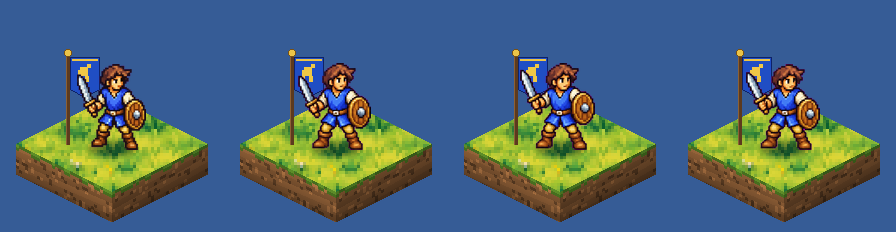</div><figcaption>idle at 1×</figcaption></figure><figure><div class="strip"></div><figcaption>strike at 1×</figcaption></figure><figure><div class="strip">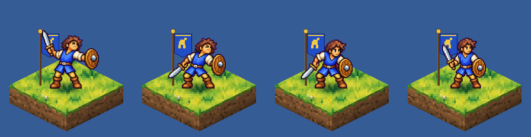</div><figcaption>flinch at 1×</figcaption></figure><figure><div class="strip">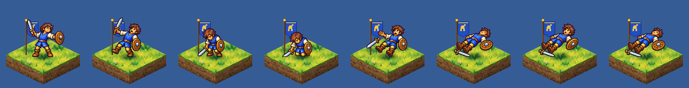</div><figcaption>death at 1×</figcaption></figure></div></details>
</section>
<section class="method" id="m-g1">
  <header class="mhead"><span class="badge">G1</span><div><h3>Sheet with pose blockouts</h3><p class="verdict">The same sheet with flat-colour pose blockouts: predictable placement and size on the first call, slightly tamer posing. The recipe is built on it.</p></div></header>
  <dl class="facts"><div><dt>Round-1 mean</dt><dd>6.08</dd></div><div><dt>Animations</dt><dd>4 of 4</dd></div>
  <div><dt>Image API</dt><dd>$0.55</dd></div><div><dt>Calls</dt><dd>7</dd></div><div><dt>Agent time</dt><dd>23 min</dd></div></dl>
  <div class="prose"><p><strong>How it worked.</strong> As G0, but each cell holds a flat-colour blockout of that frame's pose, drawn from <code>poses.json</code> in the character's own colours. The prompt asks the model to redraw the character from cell 1 in the pose of each blockout and to replace the blockout entirely. Calibration ran this exact setup once before the trials and it worked on the first call.</p><p><strong>What came out well.</strong> Frames landed on the ground line at the sprite's size: standing frames 85–87 px against the sprite's 86, sword tips within 1–7 px of the poses. Strike 7.17 and death 7.00, with only one call needed for the death sheet.</p><p><strong>What went wrong.</strong> Like every redraw, the idle boils (4.13). The poses follow the blockouts closely, which makes them a little tamer than G0's (“timid legs in the anticipation”). Four of its six strike variants still pushed the blade out of the canvas, a thin magenta fringe survives keying, and the chosen flinch has a brown strap artifact on the shorts.</p></div>
  <div class="videos"><figure><video src="assets/G1_sequence_3x.mp4" poster="assets/G1_sequence_3x_poster.jpg" muted loop playsinline controls preload="none"></video><figcaption>Full sequence at 3×: idle, strike, idle, flinch, idle, death, corpse hold</figcaption></figure><figure><video src="assets/G1_vignette.mp4" poster="assets/G1_vignette_poster.jpg" muted loop playsinline controls preload="none"></video><figcaption>Combat vignette at 2×: blue strikes, red flinches; blue strikes again, red dies</figcaption></figure></div>
  <details><summary>Every frame at game scale</summary><div><figure><div class="strip">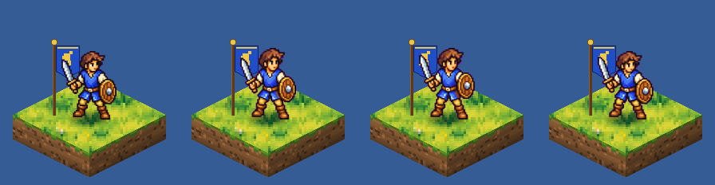</div><figcaption>idle at 1×</figcaption></figure><figure><div class="strip">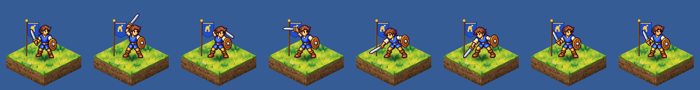</div><figcaption>strike at 1×</figcaption></figure><figure><div class="strip">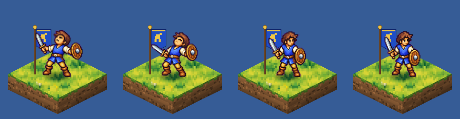</div><figcaption>flinch at 1×</figcaption></figure><figure><div class="strip">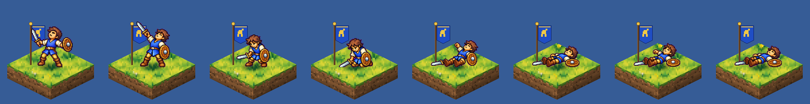</div><figcaption>death at 1×</figcaption></figure></div></details>
</section>
<section class="method" id="m-g2">
  <header class="mhead"><span class="badge">G2</span><div><h3>Rig frames repainted</h3><p class="verdict">The most consistent model method: the rig's poses, redrawn as clean pixel art. Strong everywhere except idle, and it needs a rig per unit.</p></div></header>
  <dl class="facts"><div><dt>Round-1 mean</dt><dd>6.88</dd></div><div><dt>Animations</dt><dd>4 of 4</dd></div>
  <div><dt>Image API</dt><dd>$0.71</dd></div><div><dt>Calls</dt><dd>9</dd></div><div><dt>Agent time</dt><dd>17 min</dd></div></dl>
  <div class="prose"><p><strong>How it worked.</strong> The same one-call sheet, but each cell holds arm R's finished rig frame for that beat. The prompt asks the model to keep the draft's pose and position and redraw it as hand-made pixel art: repair joints, let hair, tunic and limbs bend.</p><p><strong>What came out well.</strong> Second-best strike (7.35) and flinch (7.20) in round 1, and the steadiest across animations (6.88 mean). It fixed the rig's weakest frames: a real kneel, a forward slump and a side-view corpse face. Asking it to copy the sprite's own pixels halved the idle shimmer compared with G1's blockouts.</p><p><strong>What went wrong.</strong> It inherits the rig's poses, including the tame ones, and loses some of the rig's overlapping action. The idle still shimmers (5.78). It costs a rig build for every unit, which the other model methods do not need.</p></div>
  <div class="videos"><figure><video src="assets/G2_sequence_3x.mp4" poster="assets/G2_sequence_3x_poster.jpg" muted loop playsinline controls preload="none"></video><figcaption>Full sequence at 3×: idle, strike, idle, flinch, idle, death, corpse hold</figcaption></figure><figure><video src="assets/G2_vignette.mp4" poster="assets/G2_vignette_poster.jpg" muted loop playsinline controls preload="none"></video><figcaption>Combat vignette at 2×: blue strikes, red flinches; blue strikes again, red dies</figcaption></figure></div>
  <details><summary>Every frame at game scale</summary><div><figure><div class="strip">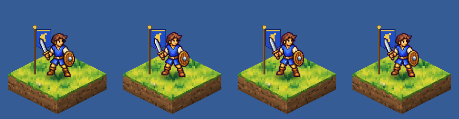</div><figcaption>idle at 1×</figcaption></figure><figure><div class="strip">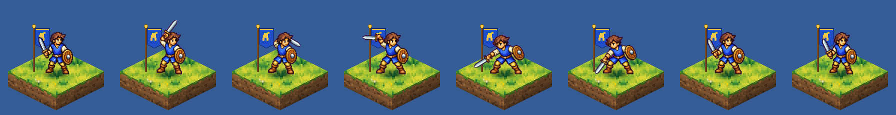</div><figcaption>strike at 1×</figcaption></figure><figure><div class="strip">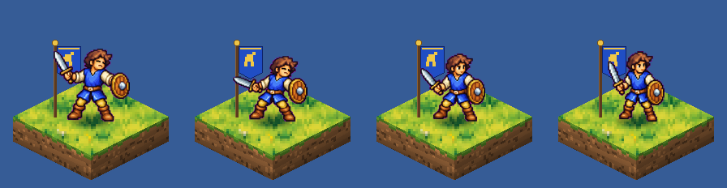</div><figcaption>flinch at 1×</figcaption></figure><figure><div class="strip">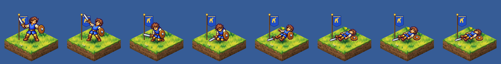</div><figcaption>death at 1×</figcaption></figure></div></details>
</section>
<section class="method" id="m-k">
  <header class="mhead"><span class="badge">K</span><div><h3>Keys, then in-betweens</h3><p class="verdict">Keys first, then in-betweens drawn against the finished keys: the best death of the trials, at twice the calls.</p></div></header>
  <dl class="facts"><div><dt>Round-1 mean</dt><dd>7.41</dd></div><div><dt>Animations</dt><dd>2 of 4</dd></div>
  <div><dt>Image API</dt><dd>$0.56</dd></div><div><dt>Calls</dt><dd>7</dd></div><div><dt>Agent time</dt><dd>14 min</dd></div></dl>
  <div class="prose"><p><strong>How it worked.</strong> Pass 1 draws only the key poses (strike: wind-up, contact, follow-through; death: impact, kneel, hitting the ground) on the guided sheet. Pass 2 pastes the accepted keys back into their cells as finished art, puts blockouts in the remaining cells, and asks for in-betweens that connect them.</p><p><strong>What came out well.</strong> Death 7.62, ranked first by all three judges: the most dramatic fall, with the sword visibly spinning out of the hand on frame 4. The model kept the pasted keys almost unchanged in pass 2, so the in-betweens really are drawn against fixed neighbours.</p><p><strong>What went wrong.</strong> Two passes per animation and a by-eye pick in each. One of the two heaviest magenta halos (the kind of fringe the recipe's de-fringe step now removes), the shield flipping to its back side in two strike frames, and a corpse lying flatter than the isometric axis. Made only strike and death.</p></div>
  <div class="videos"><figure><video src="assets/K_sequence_3x.mp4" poster="assets/K_sequence_3x_poster.jpg" muted loop playsinline controls preload="none"></video><figcaption>Full sequence at 3×: idle, strike, idle, flinch, idle, death, corpse hold</figcaption></figure></div>
  <details><summary>Every frame at game scale</summary><div><figure><div class="strip">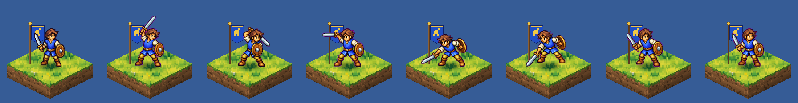</div><figcaption>strike at 1×</figcaption></figure><figure><div class="strip">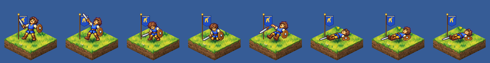</div><figcaption>death at 1×</figcaption></figure></div></details>
</section>
<section class="method" id="m-c">
  <header class="mhead"><span class="badge">C</span><div><h3>Chained per-frame</h3><p class="verdict">Chaining frames one call at a time carries drift forward. It is three times the cost of a sheet and no more consistent.</p></div></header>
  <dl class="facts"><div><dt>Round-1 mean</dt><dd>6.63</dd></div><div><dt>Animations</dt><dd>1 of 4</dd></div>
  <div><dt>Image API</dt><dd>$1.11</dd></div><div><dt>Calls</dt><dd>11</dd></div><div><dt>Agent time</dt><dd>11 min</dd></div></dl>
  <div class="prose"><p><strong>How it worked.</strong> Each frame came from its own call: a two-cell template with the previous accepted frame in cell 1 and the next pose's blockout in cell 2, plus the real sprite as a separate reference image. Strike only. A side probe tried the Responses API's multi-turn image tool.</p><p><strong>What came out well.</strong> Each step on its own is a clean continuation, and the strike reads (6.63).</p><p><strong>What went wrong.</strong> Small changes accumulate: the shield and hair grow over the strike, outlines turn purple and the last frame pops back to idle. Nine calls for one animation, where a sheet takes one call per attempt. The Responses-API probe worked mechanically but drew the character about ten times larger, mirrored and older, with no shared registration, so its frames could not be used.</p></div>
  <div class="videos"><figure><video src="assets/C_sequence_3x.mp4" poster="assets/C_sequence_3x_poster.jpg" muted loop playsinline controls preload="none"></video><figcaption>Full sequence at 3×: idle, strike, idle, flinch, idle, death, corpse hold</figcaption></figure></div>
  <details><summary>Every frame at game scale</summary><div><figure><div class="strip">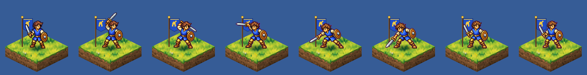</div><figcaption>strike at 1×</figcaption></figure></div></details>
</section>
<section class="method" id="m-final">
  <header class="mhead"><span class="badge">R+</span><div><h3>Recommended recipe</h3><p class="verdict">The recommendation: draw the big actions with the model on a guided sheet, and warp the real sprite for idle and for the frames next to idle.</p></div></header>
  <dl class="facts"><div><dt>Round-1 mean</dt><dd>7.28</dd></div><div><dt>Animations</dt><dd>4 of 4</dd></div>
  <div><dt>Image API</dt><dd>$0.23</dd></div><div><dt>Calls</dt><dd>3</dd></div><div><dt>Run time</dt><dd>27 s</dd></div></dl>
  <div class="prose"><p><strong>How it worked.</strong> Three guided-sheet calls in parallel (strike, flinch, death), cell 1 the real sprite and the other cells blockouts from the poses. Idle and the last frame of the strike and of the flinch are the real sprite bent by a sharpened mesh warp toward the pose, so nothing boils and nothing pops when the unit returns to idle. Death frame 0 is the flinch's impact frame. Code then removes the magenta keying fringe and, for the shipped look, adds a smear arc and impact spark to the strike and a hit flash to flinch and death. One command: <code>python3 lib/recipe.py --unit units/swordsman.json --out final</code>.</p><p><strong>What came out well.</strong> In round 1 its first build was the best complete set (7.28 mean over four animations), first for flinch and second for idle. The fixed build was then judged blind against its first build and the round-1 winners (see the verification table). A full set costs 3 calls, about $0.23 and under 30 s, and the same tool animated Hyborem.</p><p><strong>What went wrong.</strong> The model still decides details: the first build's strike had a tan smudge on the shorts, its flinch drew squeezed manga eyes and swollen hair, and its corpse lies flatter than the isometric axis. Picking between two variants by eye remains a step. Big units need a taller canvas.</p></div>
  <div class="videos"><figure><video src="assets/FINAL_sequence_3x.mp4" poster="assets/FINAL_sequence_3x_poster.jpg" muted loop playsinline controls preload="none"></video><figcaption>Full sequence at 3×: idle, strike, idle, flinch, idle, death, corpse hold</figcaption></figure><figure><video src="assets/FINAL_vignette.mp4" poster="assets/FINAL_vignette_poster.jpg" muted loop playsinline controls preload="none"></video><figcaption>Combat vignette at 2×: blue strikes, red flinches; blue strikes again, red dies</figcaption></figure></div>
  <details><summary>Every frame at game scale</summary><div><figure><div class="strip">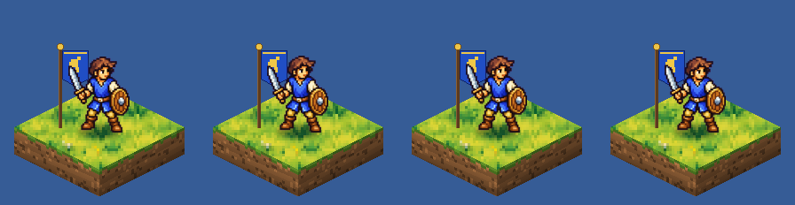</div><figcaption>idle at 1×</figcaption></figure><figure><div class="strip">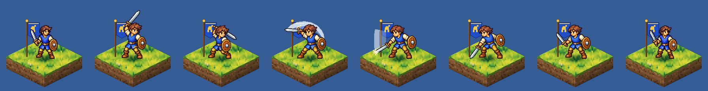</div><figcaption>strike at 1×</figcaption></figure><figure><div class="strip">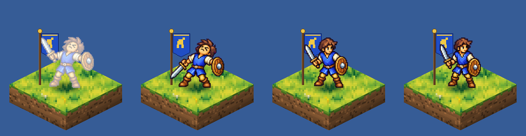</div><figcaption>flinch at 1×</figcaption></figure><figure><div class="strip">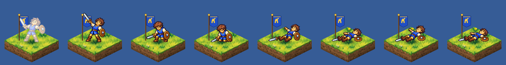</div><figcaption>death at 1×</figcaption></figure></div></details>
</section>
</section>

<section class="block wrap" id="recipe"><h2>Recommended pipeline</h2>
<ol class="steps read">
  <li><strong>Annotate the unit once.</strong> Write <code>units/&lt;unit&gt;.json</code>: the sprite path, one line saying what the
    model must keep (outfit, weapon, which hand), and the frame-0 joints in canvas pixels. <code>ak.grid_view</code> draws the sprite
    enlarged with coordinates; the swordsman took about ten minutes, Hyborem five.</li>
  <li><strong>Run the recipe.</strong> Three sheet calls go out in parallel; idle and the settle frames are warped locally.
    About 25 s and $0.23 per unit.</li>
  <li><strong>Pick variants by eye.</strong> Each sheet comes back in two variants and one in two has a visible defect. Look at
    <code>work/&lt;out&gt;/build_report.json</code> and the strips, then re-cut with another variant for free.</li>
  <li><strong>Preview and hand over.</strong> The preview step writes strips, the full-sequence GIF and MP4 and the combat vignette.
    The engine reads <code>sheet_&lt;anim&gt;.png</code> plus <code>manifest.json</code> (per-frame ms, the hit event), anchors
    canvas point (80, 126) on the tile centre and places the banner from the idle frame-0 box.</li>
</ol>
<pre><code>cd projects/ffh-anim-sprint
python3 lib/recipe.py --unit units/swordsman.json --out final                  # 3 calls, writes final/ and final_nofx/
python3 lib/recipe.py --unit units/swordsman.json --out final --rebuild --pick strike=2   # re-cut, no API calls
python3 lib/preview.py --arm final --root final                               # strips, sequence_*.gif/mp4, vignette
python3 lib/recipe.py --unit units/hyborem.json --out final_hyborem            # another unit: grey guides, retargeted poses</code></pre>
<p class="read">For a unit with purple or magenta art (Sheaim, liches) switch the key to cyan, as M7 already does for statics;
the recipe skips its de-fringe step automatically when the sprite itself contains purple.</p>
</section>
<section class="block wrap" id="how"><h2>How the sprint ran</h2>
<div class="cols">
  <div>
    <h3>One shared contract</h3>
    <ul class="plain">
      <li>Every method animated the same accepted M7 swordsman (96×120, figure 86 px, facing lower-left) on a
        160×128 canvas anchored bottom-centre like an M7 unit, so idle frame 0 is the static sprite.</li>
      <li>A written beat sheet fixed the frames and timings: idle 4 frames looping at 250 ms; strike 8 frames,
        about 870 ms, hit on frame 4; flinch 4 frames, about 440 ms; death 8 frames, ending on a held corpse.</li>
      <li>One set of 2D joint positions per frame (<code>poses.json</code>) drove both the pose blockouts and the
        rig, so methods differ only in how the pixels are made.</li>
      <li>Shared code did everything around the pixels: keying the magenta, one scale per sheet calibrated from
        the reference cell, snapping each frame onto the ground row, metrics, previews and the GIF and MP4 sequences.</li>
    </ul>
    <h3>Calibration before the trials</h3>
    <ul class="plain">
      <li>One guided strike sheet went to three image models for $0.36 in 26 s. gpt-image-2.5-sunburst kept the
        reference cell almost untouched (scale 1.004, silhouette overlap 0.97); gpt-image-2.5-flare redrew it and drew its
        bottom row 14 px off the ground; gpt-image-2 scaled everything up 19%.</li>
      <li>Sunburst does not accept <code>input_fidelity</code>. High quality looked the same as medium at twice the price.
        Grey mannequins worked as well as coloured blockouts. Frozen for every image-model method: sunburst, medium,
        1536×1024, two variants per call, the roster sheet as the second image.</li>
    </ul>
  </div>
  <div>
    <h3>Trials and judging</h3>
    <ul class="plain">
      <li>Each method was run by its own agent with a 60-minute timebox per animation, up to three rounds per sheet,
        notes and timings logged. Strikes came first and were checked before the other animations.</li>
      <li>Round 1: three judge agents per animation, letters instead of names, row order shuffled per judge. Each did a
        frame-ordering test on shuffled frames before seeing the ordered strips, then flagged defects and scored the rubric.
        The whole-sprite control came last for strike, flinch and death in every judge's ranking, which is the sanity check
        that the judging works.</li>
      <li>Verification: three new judges and new letters compared the fixed recipe per animation with its first build and
        the two best round-1 methods.</li>
    </ul>
    <h3>Caveats</h3>
    <ul class="plain">
      <li>The judges are Claude agents, the same model family that ran the methods, and they judge stills, not motion. No
        human scored anything; the players and the pairs above are for your eye.</li>
      <li>Each method ran once, with two variants per call. Score gaps under about 0.4 are within noise.</li>
      <li>The recipe was designed after seeing the arms' outputs and notes. Its round-2 fixes came from the round-1 judges'
        comments, which is why the verification round used fresh judges.</li>
      <li>Dollar figures are image-API spend only, at the M7 ledger's deliberately pessimistic prices; the Claude tokens behind
        every agent are not costed.</li>
      <li>The container restarted once mid-sprint; the idle, flinch and death judging was re-run from the same packets.</li>
    </ul>
  </div>
</div>
</section>
<section class="block wrap" id="next"><h2>Not tested yet</h2>
<ul class="gap-list read">
  <li><strong>Video models.</strong> Sora 2 and Sora 2 Pro were shut down on 24 September 2026 and <code>/v1/videos</code>
    returns 404 for this key, so image-to-video-to-frames could not be tried.</li>
  <li><strong>Local diffusion with pose control</strong> (SDXL or Flux with an OpenPose ControlNet and an IP-Adapter for
    identity) on your RTX 4080. This container has no GPU.</li>
  <li><strong>Sprite-animation services</strong> such as PixelLab's skeleton animation or Retro Diffusion. They need an
    account and an API key.</li>
  <li><strong>Other facings.</strong> Every animation faces lower-left. The engine can mirror for lower-right, but the two
    upper facings need back views, which means a second set of sheets per unit.</li>
  <li><strong>More units, and big ones.</strong> Hyborem worked on the first try; casters with staves, archers, mounted units
    and the 134 px Hill Giant are the next checks. Big units need a taller canvas than 128 px.</li>
  <li><strong>A walk cycle.</strong> Moving between tiles is the animation players see most, and it was out of scope here.</li>
  <li><strong>Engine integration.</strong> The client does not load M7 sprites yet. The spec here (canvas, anchor, manifest
    with per-frame ms and a hit event, banner from the idle box) is written so a loader can use it directly.</li>
</ul>
</section>
</main>
<footer class="wrap"><p>Everything is in <code>projects/ffh-anim-sprint/</code> on branch <code>ccr-4acd4727-7uk22m</code>:
<code>spec.md</code>, <code>beats.md</code>, <code>poses.json</code>; <code>lib/</code> (harness and <code>recipe.py</code>);
<code>arms/&lt;method&gt;/</code> with frames, manifests, sheets, notes, timings and <code>sequence_*.{gif,mp4}</code>;
<code>final/</code> and <code>final_hyborem/</code> for the recipe; <code>judging/</code> with every judge's JSON, the keys and
<code>scores.json</code>; <code>spend.jsonl</code>.</p></footer>

<script>window.SPRINT = {"tile":"assets/tile_grass.png","arms":[{"id":"FINAL","name":"Recommended recipe","family":"recipe","anims":{"idle":{"sheet":"assets/FINAL_idle.png","ms":[250,250,250,250],"hit":null,"loop":true,"hold":false},"strike":{"sheet":"assets/FINAL_strike.png","ms":[100,120,160,50,120,120,100,100],"hit":4,"loop":false,"hold":false},"flinch":{"sheet":"assets/FINAL_flinch.png","ms":[80,120,120,120],"hit":null,"loop":false,"hold":false},"death":{"sheet":"assets/FINAL_death.png","ms":[80,120,140,200,80,80,80,400],"hit":null,"loop":false,"hold":true}},"files":{"sequence_3x.mp4":"assets/FINAL_sequence_3x.mp4","sequence_3x.mp4:poster":"assets/FINAL_sequence_3x_poster.jpg","vignette.mp4":"assets/FINAL_vignette.mp4","vignette.mp4:poster":"assets/FINAL_vignette_poster.jpg"},"metrics":{"idle":{"nonrigid_mean":0.018,"overlap_index":0.433,"drift_mean":0.04,"boil_mean":11.55,"n_gate_flags":0},"strike":{"nonrigid_mean":0.349,"overlap_index":0.5,"drift_mean":0.68,"boil_mean":125.74,"n_gate_flags":0},"flinch":{"nonrigid_mean":0.344,"overlap_index":0.0,"drift_mean":0.98,"boil_mean":126.39,"n_gate_flags":0},"death":{"nonrigid_mean":0.396,"overlap_index":1.5,"drift_mean":0.99,"boil_mean":128.49,"n_gate_flags":0}},"spend":{"usd":0.0,"calls":0,"images":0},"minutes":{}},{"id":"FN","name":"Recommended recipe (no FX)","family":"recipe","anims":{"idle":{"sheet":"assets/FN_idle.png","ms":[250,250,250,250],"hit":null,"loop":true,"hold":false},"strike":{"sheet":"assets/FN_strike.png","ms":[100,120,160,50,120,120,100,100],"hit":4,"loop":false,"hold":false},"flinch":{"sheet":"assets/FN_flinch.png","ms":[80,120,120,120],"hit":null,"loop":false,"hold":false},"death":{"sheet":"assets/FN_death.png","ms":[80,120,140,200,80,80,80,400],"hit":null,"loop":false,"hold":true}},"files":{"sequence_3x.mp4":"assets/FN_sequence_3x.mp4","sequence_3x.mp4:poster":"assets/FN_sequence_3x_poster.jpg","vignette.mp4":"assets/FN_vignette.mp4","vignette.mp4:poster":"assets/FN_vignette_poster.jpg"},"metrics":{"idle":{"nonrigid_mean":0.018,"overlap_index":0.433,"drift_mean":0.04,"boil_mean":11.55,"n_gate_flags":0},"strike":{"nonrigid_mean":0.323,"overlap_index":0.5,"drift_mean":0.68,"boil_mean":114.09,"n_gate_flags":0},"flinch":{"nonrigid_mean":0.344,"overlap_index":0.5,"drift_mean":0.58,"boil_mean":112.12,"n_gate_flags":0},"death":{"nonrigid_mean":0.396,"overlap_index":1.299,"drift_mean":0.79,"boil_mean":121.84,"n_gate_flags":0}},"spend":{"usd":0.0,"calls":0,"images":0},"minutes":{}},{"id":"HYB","name":"Recipe on Hyborem","family":"recipe","anims":{"idle":{"sheet":"assets/HYB_idle.png","ms":[250,250,250,250],"hit":null,"loop":true,"hold":false},"strike":{"sheet":"assets/HYB_strike.png","ms":[100,120,160,50,120,120,100,100],"hit":4,"loop":false,"hold":false},"flinch":{"sheet":"assets/HYB_flinch.png","ms":[80,120,120,120],"hit":null,"loop":false,"hold":false},"death":{"sheet":"assets/HYB_death.png","ms":[80,120,140,200,80,80,80,400],"hit":null,"loop":false,"hold":true}},"files":{"sequence_3x.mp4":"assets/HYB_sequence_3x.mp4","sequence_3x.mp4:poster":"assets/HYB_sequence_3x_poster.jpg","vignette.mp4":"assets/HYB_vignette.mp4","vignette.mp4:poster":"assets/HYB_vignette_poster.jpg"},"metrics":{"idle":{"nonrigid_mean":0.001,"overlap_index":0.0,"drift_mean":2.59,"boil_mean":0.67,"n_gate_flags":4},"strike":{"nonrigid_mean":0.274,"overlap_index":0.0,"drift_mean":2.72,"boil_mean":104.41,"n_gate_flags":9},"flinch":{"nonrigid_mean":0.288,"overlap_index":0.0,"drift_mean":2.86,"boil_mean":117.38,"n_gate_flags":3},"death":{"nonrigid_mean":0.363,"overlap_index":0.0,"drift_mean":2.59,"boil_mean":105.09,"n_gate_flags":7}},"spend":{"usd":0.0,"calls":0,"images":0},"minutes":{}},{"id":"A0","name":"Whole-sprite tween (control)","family":"code","anims":{"idle":{"sheet":"assets/A0_idle.png","ms":[250,250,250,250],"hit":null,"loop":true,"hold":false},"strike":{"sheet":"assets/A0_strike.png","ms":[100,120,160,50,120,120,100,100],"hit":4,"loop":false,"hold":false},"flinch":{"sheet":"assets/A0_flinch.png","ms":[80,120,120,120],"hit":null,"loop":false,"hold":false},"death":{"sheet":"assets/A0_death.png","ms":[80,120,140,200,80,80,80,400],"hit":null,"loop":false,"hold":true}},"files":{"sequence_3x.mp4":"assets/A0_sequence_3x.mp4","sequence_3x.mp4:poster":"assets/A0_sequence_3x_poster.jpg","vignette.mp4":"assets/A0_vignette.mp4","vignette.mp4:poster":"assets/A0_vignette_poster.jpg"},"metrics":{"idle":{"nonrigid_mean":0.034,"overlap_index":0.0,"drift_mean":0.38,"boil_mean":16.61,"n_gate_flags":0},"strike":{"nonrigid_mean":0.062,"overlap_index":0.0,"drift_mean":0.47,"boil_mean":105.75,"n_gate_flags":0},"flinch":{"nonrigid_mean":0.053,"overlap_index":0.0,"drift_mean":0.54,"boil_mean":92.55,"n_gate_flags":0},"death":{"nonrigid_mean":0.158,"overlap_index":1.0,"drift_mean":0.56,"boil_mean":101.7,"n_gate_flags":0}},"spend":{"usd":0.0,"calls":0,"images":0},"minutes":{"all four animations":0.011666666666666667}},{"id":"R","name":"Cut-out rig + mesh warp","family":"code","anims":{"idle":{"sheet":"assets/R_idle.png","ms":[250,250,250,250],"hit":null,"loop":true,"hold":false},"strike":{"sheet":"assets/R_strike.png","ms":[100,120,160,50,120,120,100,100],"hit":4,"loop":false,"hold":false},"flinch":{"sheet":"assets/R_flinch.png","ms":[80,120,120,120],"hit":null,"loop":false,"hold":false},"death":{"sheet":"assets/R_death.png","ms":[80,120,140,200,80,80,80,400],"hit":null,"loop":false,"hold":true}},"files":{"sequence_3x.mp4":"assets/R_sequence_3x.mp4","sequence_3x.mp4:poster":"assets/R_sequence_3x_poster.jpg","vignette.mp4":"assets/R_vignette.mp4","vignette.mp4:poster":"assets/R_vignette_poster.jpg"},"metrics":{"strike":{"nonrigid_mean":0.281,"overlap_index":1.299,"drift_mean":0.41,"boil_mean":86.02,"n_gate_flags":0},"idle":{"nonrigid_mean":0.021,"overlap_index":0.433,"drift_mean":0.02,"boil_mean":12.06,"n_gate_flags":0},"flinch":{"nonrigid_mean":0.18,"overlap_index":0.5,"drift_mean":0.44,"boil_mean":67.2,"n_gate_flags":0},"death":{"nonrigid_mean":0.428,"overlap_index":0.0,"drift_mean":0.54,"boil_mean":103.74,"n_gate_flags":0}},"spend":{"usd":0.0,"calls":0,"images":0},"minutes":{"strike":13.768333333333334,"idle":8.108333333333333,"flinch":2.7800000000000002,"death":5.221666666666667}},{"id":"G0","name":"Sheet, no pose guides","family":"model","anims":{"idle":{"sheet":"assets/G0_idle.png","ms":[250,250,250,250],"hit":null,"loop":true,"hold":false},"strike":{"sheet":"assets/G0_strike.png","ms":[100,120,160,50,120,120,100,100],"hit":4,"loop":false,"hold":false},"flinch":{"sheet":"assets/G0_flinch.png","ms":[80,120,120,120],"hit":null,"loop":false,"hold":false},"death":{"sheet":"assets/G0_death.png","ms":[80,120,140,200,80,80,80,400],"hit":null,"loop":false,"hold":true}},"files":{"sequence_3x.mp4":"assets/G0_sequence_3x.mp4","sequence_3x.mp4:poster":"assets/G0_sequence_3x_poster.jpg","vignette.mp4":"assets/G0_vignette.mp4","vignette.mp4:poster":"assets/G0_vignette_poster.jpg"},"metrics":{"strike":{"nonrigid_mean":0.345,"overlap_index":0.433,"drift_mean":0.97,"boil_mean":123.33,"n_gate_flags":0},"idle":{"nonrigid_mean":0.112,"overlap_index":0.433,"drift_mean":0.59,"boil_mean":50.81,"n_gate_flags":0},"flinch":{"nonrigid_mean":0.436,"overlap_index":0.0,"drift_mean":0.81,"boil_mean":97.02,"n_gate_flags":0},"death":{"nonrigid_mean":0.451,"overlap_index":0.433,"drift_mean":0.95,"boil_mean":113.09,"n_gate_flags":0}},"spend":{"usd":0.7068,"calls":9,"images":18},"minutes":{"strike":8.025,"idle":4.391666666666667,"flinch":4.391666666666667,"death":5.8566666666666665}},{"id":"G1","name":"Sheet with pose blockouts","family":"model","anims":{"idle":{"sheet":"assets/G1_idle.png","ms":[250,250,250,250],"hit":null,"loop":true,"hold":false},"strike":{"sheet":"assets/G1_strike.png","ms":[100,120,160,50,120,120,100,100],"hit":4,"loop":false,"hold":false},"flinch":{"sheet":"assets/G1_flinch.png","ms":[80,120,120,120],"hit":null,"loop":false,"hold":false},"death":{"sheet":"assets/G1_death.png","ms":[80,120,140,200,80,80,80,400],"hit":null,"loop":false,"hold":true}},"files":{"sequence_3x.mp4":"assets/G1_sequence_3x.mp4","sequence_3x.mp4:poster":"assets/G1_sequence_3x_poster.jpg","vignette.mp4":"assets/G1_vignette.mp4","vignette.mp4:poster":"assets/G1_vignette_poster.jpg"},"metrics":{"strike":{"nonrigid_mean":0.311,"overlap_index":0.829,"drift_mean":0.94,"boil_mean":109.92,"n_gate_flags":0},"idle":{"nonrigid_mean":0.089,"overlap_index":0.433,"drift_mean":0.68,"boil_mean":43.88,"n_gate_flags":0},"flinch":{"nonrigid_mean":0.33,"overlap_index":0.0,"drift_mean":0.94,"boil_mean":82.99,"n_gate_flags":0},"death":{"nonrigid_mean":0.412,"overlap_index":1.479,"drift_mean":1.14,"boil_mean":110.1,"n_gate_flags":0}},"spend":{"usd":0.5507000000000001,"calls":7,"images":14},"minutes":{"strike":5.83,"idle+flinch (sheet A, rest agent)":8.483333333333333,"death (sheet B, rest agent)":8.483333333333333}},{"id":"G2","name":"Rig frames repainted","family":"hybrid","anims":{"idle":{"sheet":"assets/G2_idle.png","ms":[250,250,250,250],"hit":null,"loop":true,"hold":false},"strike":{"sheet":"assets/G2_strike.png","ms":[100,120,160,50,120,120,100,100],"hit":4,"loop":false,"hold":false},"flinch":{"sheet":"assets/G2_flinch.png","ms":[80,120,120,120],"hit":null,"loop":false,"hold":false},"death":{"sheet":"assets/G2_death.png","ms":[80,120,140,200,80,80,80,400],"hit":null,"loop":false,"hold":true}},"files":{"sequence_3x.mp4":"assets/G2_sequence_3x.mp4","sequence_3x.mp4:poster":"assets/G2_sequence_3x_poster.jpg","vignette.mp4":"assets/G2_vignette.mp4","vignette.mp4:poster":"assets/G2_vignette_poster.jpg"},"metrics":{"strike":{"nonrigid_mean":0.295,"overlap_index":1.09,"drift_mean":0.8,"boil_mean":95.29,"n_gate_flags":0},"idle":{"nonrigid_mean":0.033,"overlap_index":0.707,"drift_mean":0.74,"boil_mean":21.61,"n_gate_flags":0},"flinch":{"nonrigid_mean":0.302,"overlap_index":0.0,"drift_mean":1.05,"boil_mean":92.39,"n_gate_flags":0},"death":{"nonrigid_mean":0.421,"overlap_index":0.829,"drift_mean":1.19,"boil_mean":101.78,"n_gate_flags":0}},"spend":{"usd":0.709,"calls":9,"images":18},"minutes":{"strike":7.944999999999999,"idle":4.29,"flinch":0.51,"death":4.26}},{"id":"K","name":"Keys, then in-betweens","family":"model","anims":{"strike":{"sheet":"assets/K_strike.png","ms":[100,120,160,50,120,120,100,100],"hit":4,"loop":false,"hold":false},"death":{"sheet":"assets/K_death.png","ms":[80,120,140,200,80,80,80,400],"hit":null,"loop":false,"hold":true}},"files":{"sequence_3x.mp4":"assets/K_sequence_3x.mp4","sequence_3x.mp4:poster":"assets/K_sequence_3x_poster.jpg"},"metrics":{"death":{"nonrigid_mean":0.409,"overlap_index":0.433,"drift_mean":1.18,"boil_mean":112.46,"n_gate_flags":0},"strike":{"nonrigid_mean":0.333,"overlap_index":0.5,"drift_mean":1.18,"boil_mean":125.94,"n_gate_flags":0}},"spend":{"usd":0.5570999999999999,"calls":7,"images":14},"minutes":{"death":6.775,"strike":6.9}},{"id":"C","name":"Chained per-frame","family":"model","anims":{"strike":{"sheet":"assets/C_strike.png","ms":[100,120,160,50,120,120,100,100],"hit":4,"loop":false,"hold":false}},"files":{"sequence_3x.mp4":"assets/C_sequence_3x.mp4","sequence_3x.mp4:poster":"assets/C_sequence_3x_poster.jpg"},"metrics":{"strike":{"nonrigid_mean":0.342,"overlap_index":1.118,"drift_mean":1.14,"boil_mean":106.82,"n_gate_flags":0}},"spend":{"usd":1.1065,"calls":11,"images":20},"minutes":{"strike":10.16,"responses probe (API calls)":0.6916666666666667}}],"scores":{"R":{"idle":{"weighted":8.07,"motion":7.0,"consistency":9.33,"style":9.33,"appeal":6.33,"mean_rank":1.33,"ordering_accuracy":1.0,"n_judges":3},"flinch":{"weighted":5.2,"motion":5.0,"consistency":6.0,"style":5.0,"appeal":4.33,"mean_rank":5.0,"ordering_accuracy":1.0,"n_judges":3},"death":{"weighted":3.97,"motion":5.0,"consistency":3.67,"style":3.33,"appeal":3.0,"mean_rank":6.0,"ordering_accuracy":1.0,"n_judges":3},"strike":{"weighted":4.95,"motion":5.33,"consistency":5.0,"style":4.67,"appeal":4.33,"mean_rank":7.0,"ordering_accuracy":1.0,"n_judges":3},"overall":5.55},"A0":{"idle":{"weighted":6.28,"motion":5.67,"consistency":6.33,"style":8.0,"appeal":5.33,"mean_rank":3.0,"ordering_accuracy":1.0,"n_judges":3},"flinch":{"weighted":5.03,"motion":3.0,"consistency":6.67,"style":7.67,"appeal":3.0,"mean_rank":6.0,"ordering_accuracy":0.83,"n_judges":3},"death":{"weighted":3.62,"motion":2.0,"consistency":5.33,"style":5.33,"appeal":1.67,"mean_rank":7.0,"ordering_accuracy":0.71,"n_judges":3},"strike":{"weighted":4.58,"motion":1.67,"consistency":7.0,"style":8.0,"appeal":2.0,"mean_rank":8.0,"ordering_accuracy":0.67,"n_judges":3},"overall":4.88},"G0":{"idle":{"weighted":3.8,"motion":3.67,"consistency":2.67,"style":5.33,"appeal":4.33,"mean_rank":5.67,"ordering_accuracy":1.0,"n_judges":3},"flinch":{"weighted":6.18,"motion":7.0,"consistency":4.67,"style":6.67,"appeal":6.67,"mean_rank":3.33,"ordering_accuracy":1.0,"n_judges":3},"death":{"weighted":7.03,"motion":8.67,"consistency":5.33,"style":6.0,"appeal":8.0,"mean_rank":3.67,"ordering_accuracy":0.88,"n_judges":3},"strike":{"weighted":7.6,"motion":8.67,"consistency":6.33,"style":7.33,"appeal":8.0,"mean_rank":1.33,"ordering_accuracy":1.0,"n_judges":3},"overall":6.15},"G2":{"idle":{"weighted":5.78,"motion":6.33,"consistency":5.0,"style":6.33,"appeal":5.33,"mean_rank":4.0,"ordering_accuracy":1.0,"n_judges":3},"flinch":{"weighted":7.2,"motion":8.0,"consistency":6.33,"style":7.0,"appeal":7.33,"mean_rank":1.67,"ordering_accuracy":1.0,"n_judges":3},"death":{"weighted":7.18,"motion":8.0,"consistency":6.67,"style":6.67,"appeal":7.0,"mean_rank":3.0,"ordering_accuracy":1.0,"n_judges":3},"strike":{"weighted":7.35,"motion":7.33,"consistency":7.67,"style":7.67,"appeal":6.33,"mean_rank":2.33,"ordering_accuracy":0.92,"n_judges":3},"overall":6.88},"G1":{"idle":{"weighted":4.13,"motion":4.33,"consistency":3.0,"style":5.33,"appeal":4.33,"mean_rank":5.33,"ordering_accuracy":1.0,"n_judges":3},"flinch":{"weighted":6.02,"motion":6.67,"consistency":4.67,"style":6.67,"appeal":6.33,"mean_rank":3.67,"ordering_accuracy":0.5,"n_judges":3},"death":{"weighted":7.0,"motion":8.0,"consistency":5.67,"style":7.0,"appeal":7.33,"mean_rank":4.0,"ordering_accuracy":1.0,"n_judges":3},"strike":{"weighted":7.17,"motion":7.33,"consistency":7.33,"style":7.0,"appeal":6.67,"mean_rank":3.33,"ordering_accuracy":0.92,"n_judges":3},"overall":6.08},"final_nofx":{"idle":{"weighted":7.8,"motion":7.0,"consistency":8.67,"style":9.0,"appeal":6.33,"mean_rank":1.67,"ordering_accuracy":1.0,"n_judges":3},"flinch":{"weighted":7.37,"motion":8.67,"consistency":6.0,"style":6.67,"appeal":8.0,"mean_rank":1.33,"ordering_accuracy":1.0,"n_judges":3},"death":{"weighted":7.28,"motion":8.0,"consistency":6.67,"style":6.67,"appeal":7.67,"mean_rank":3.33,"ordering_accuracy":0.75,"n_judges":3},"strike":{"weighted":6.65,"motion":7.33,"consistency":5.67,"style":6.67,"appeal":7.0,"mean_rank":5.0,"ordering_accuracy":1.0,"n_judges":3},"overall":7.28},"K":{"death":{"weighted":7.62,"motion":8.33,"consistency":7.0,"style":7.0,"appeal":8.0,"mean_rank":1.0,"ordering_accuracy":0.75,"n_judges":3},"strike":{"weighted":7.2,"motion":8.67,"consistency":5.67,"style":6.33,"appeal":8.0,"mean_rank":3.33,"ordering_accuracy":1.0,"n_judges":3},"overall":7.41},"C":{"strike":{"weighted":6.63,"motion":7.67,"consistency":5.67,"style":6.0,"appeal":7.0,"mean_rank":5.67,"ordering_accuracy":1.0,"n_judges":3},"overall":6.63}},"spend_total":4.45};</script>
<script>/* Sprite-sheet animation players for the sprint report.
   Data: window.SPRINT = {tile, arms: [{id, name, anims: {idle: {sheet, ms: [...], hit, loop, hold}}}]}
   Every <canvas data-arm data-anim> on the page becomes a player. Canvases inside the same [data-clock] group
   share one clock and one control bar ([data-ctl] buttons inside that group). */
(function () {
  const S = window.SPRINT;
  const ARM = Object.fromEntries(S.arms.map((a) => [a.id, a]));
  const FW = 160, VX = 16, VW = 128, VH = 128;            // frame width; view = canvas x 16..144 (the safe region)
  const TAIL = { idle: 0, strike: 600, flinch: 600, death: 1600 };
  const reduce = window.matchMedia && window.matchMedia('(prefers-reduced-motion: reduce)').matches;
  const cache = {};
  const img = (src) => { if (!cache[src]) { const i = new Image(); i.src = src; cache[src] = i; } return cache[src]; };
  const tile = img(S.tile);

  function timeline(arm, anim) {
    const A = ARM[arm].anims[anim];
    const seg = []; let t = 0;
    A.ms.forEach((m, i) => { seg.push({ sheet: A.sheet, i, a: t, b: t + m, hit: A.hit === i }); t += m; });
    const tail = TAIL[anim];
    if (tail) {
      const idle = ARM[arm].anims.idle;
      if (anim === 'death') seg.push({ sheet: A.sheet, i: A.ms.length - 1, a: t, b: t + tail, tail: true });
      else seg.push({ sheet: idle ? idle.sheet : A.sheet, i: 0, a: t, b: t + tail, tail: true });
      t += tail;
    }
    return { seg, total: t, n: A.ms.length };
  }

  function Cell(cv) {
    this.cv = cv; this.ctx = cv.getContext('2d');
    this.arm = cv.dataset.arm; this.anim = cv.dataset.anim;
    this.tl = timeline(this.arm, this.anim);
    this.step = 0; this.label = cv.parentElement.querySelector('[data-frame]');
  }
  Cell.prototype.draw = function (seg, zoom, showTile) {
    const c = this.cv, x = this.ctx;
    if (c.width !== VW * zoom) { c.width = VW * zoom; c.height = VH * zoom; c.style.width = VW * zoom + 'px'; c.style.height = VH * zoom + 'px'; }
    x.imageSmoothingEnabled = false;
    x.clearRect(0, 0, c.width, c.height);
    if (showTile && tile.complete && tile.naturalWidth) {
      x.drawImage(tile, (80 - 96 - VX) * zoom, (126 - 54) * zoom, tile.naturalWidth * zoom, tile.naturalHeight * zoom);
      x.fillStyle = 'rgba(10,20,10,0.28)';
      x.beginPath(); x.ellipse((80 - VX) * zoom, 124 * zoom, 24 * zoom, 7 * zoom, 0, 0, Math.PI * 2); x.fill();
    }
    const im = img(seg.sheet);
    if (im.complete && im.naturalWidth) x.drawImage(im, seg.i * FW + VX, 0, VW, VH, 0, 0, VW * zoom, VH * zoom);
    if (this.label) {
      const A = ARM[this.arm].anims[this.anim];
      this.label.textContent = seg.tail ? (this.anim === 'death' ? 'hold' : 'idle') :
        `frame ${seg.i}/${A.ms.length - 1} · ${A.ms[seg.i]} ms${seg.hit ? ' · hit' : ''}`;
    }
  };
  Cell.prototype.at = function (t) {
    const tt = t % this.tl.total;
    return this.tl.seg.find((s) => tt >= s.a && tt < s.b) || this.tl.seg[0];
  };

  function Group(root) {
    this.root = root;
    this.cells = Array.from(root.querySelectorAll('canvas[data-arm]')).map((c) => new Cell(c));
    this.zoom = +(root.dataset.zoom || 2); this.tile = root.dataset.tile !== 'off';
    this.playing = !reduce; this.t0 = performance.now(); this.tp = 0;
    root.querySelectorAll('[data-ctl]').forEach((b) => b.addEventListener('click', () => this.ctl(b)));
    this.sync();
  }
  Group.prototype.ctl = function (b) {
    const k = b.dataset.ctl;
    if (k === 'play') { this.playing = !this.playing; if (this.playing) this.t0 = performance.now() - this.tp; }
    if (k === 'prev' || k === 'next') {
      if (this.playing) { this.playing = false; this.cells.forEach((c) => { c.step = c.at(this.tp).i; }); }
      this.cells.forEach((c) => { const n = c.tl.n; c.step = (c.step + (k === 'next' ? 1 : n - 1)) % n; });
    }
    if (k === 'restart') { this.t0 = performance.now(); this.tp = 0; this.playing = true; }
    if (k === 'zoom') this.zoom = +b.dataset.v;
    if (k === 'tile') this.tile = !this.tile;
    this.sync();
  };
  Group.prototype.sync = function () {
    this.root.querySelectorAll('[data-ctl="play"]').forEach((b) => { b.textContent = this.playing ? 'Pause' : 'Play'; b.setAttribute('aria-pressed', String(!this.playing)); });
    this.root.querySelectorAll('[data-ctl="zoom"]').forEach((b) => b.setAttribute('aria-pressed', String(+b.dataset.v === this.zoom)));
    this.root.querySelectorAll('[data-ctl="tile"]').forEach((b) => b.setAttribute('aria-pressed', String(this.tile)));
  };
  Group.prototype.frame = function (now) {
    if (this.playing) this.tp = now - this.t0;
    for (const c of this.cells) {
      const seg = this.playing ? c.at(this.tp) : (c.tl.seg.find((s) => s.i === c.step && !s.tail) || c.tl.seg[0]);
      c.draw(seg, this.zoom, this.tile);
    }
  };

  const groups = Array.from(document.querySelectorAll('[data-clock]')).map((g) => new Group(g));
  function loop(now) { groups.forEach((g) => g.frame(now)); requestAnimationFrame(loop); }
  requestAnimationFrame(loop);
  window.SPRINT_GROUPS = groups;

  // blind "which is less stiff?" pairs
  document.querySelectorAll('[data-quiz]').forEach((q) => {
    const out = q.querySelector('[data-reveal]');
    q.querySelectorAll('[data-pick]').forEach((b) => b.addEventListener('click', () => {
      q.querySelectorAll('[data-pick]').forEach((x) => x.setAttribute('aria-pressed', String(x === b)));
      const left = q.dataset.left, right = q.dataset.right;
      const nm = (id) => (ARM[id] ? ARM[id].name : id);
      out.hidden = false;
      out.textContent = `Left was ${nm(left)}; right was ${nm(right)}. You picked ${b.dataset.pick === 'L' ? nm(left) : nm(right)}.`;
      q.classList.add('answered');
    }));
  });
})();
</script>
